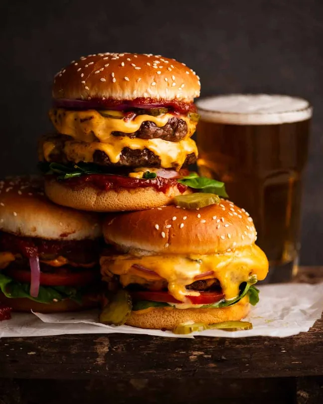

Recipe

Description:
A cheeseburger is a classic comfort food that combines juicy, seasoned
ground beef patties with melted cheese, sandwiched between soft, toasted
buns. The patty, often made from a blend of 80% lean and 20% fat ground
beef, is seasoned simply with salt and pepper or enhanced with additional
spices like garlic powder or Worcestershire sauce for extra flavor. Once
cooked to perfection, the hot patty is topped with a slice of cheese,
typically cheddar, American, or Swiss, which melts into a gooey layer that
adds richness to every bite.
Complementing the savory patty and cheese are fresh toppings such as crisp
lettuce, ripe tomato slices, and crunchy pickles, along with caramelized
or raw onions for a burst of flavor. Condiments like ketchup, mustard, or
mayonnaise are spread on the buns, adding tangy and creamy notes. Optional
ingredients like crispy bacon, sautéed mushrooms, or even a fried egg
elevate the cheeseburger to gourmet levels. Whether enjoyed at a barbecue,
a diner, or home, a cheeseburger is a universally loved meal that
satisfies cravings for both simplicity and indulgence.
Ingredients:
Patty:
- Ground Beef (80% lean, 20% fat for juiciness)
- Salt
- Black Pepper
-
Optional: Garlic Powder, Onion Powder, Paprika, or Worcestershire Sauce
Cheese
- Cheddar
- Alternatives: American, Swiss, Pepper Jack, or Monterey Jack
Vegetables:
- Lettuce
- Tomatoes
- Onions
- Pickles
Condiments:
- Ketchup
- Mustard
- Mayonnaise
- Optional: Barbecue Sauce, Hot Sauce
Optional Add-Ons:
- Bacon (crispy strips)
- Avocado (sliced or mashed)
- Jalapeños (sliced, for heat)
- Sautéed Mushrooms
Steps:
- Prepare the Patties
-
In a bowl, combine ground beef (80% lean, 20% fat) with a pinch of
salt and pepper. Optional: Add seasonings like garlic powder, onion
powder, or Worcestershire sauce for extra flavor.
-
Divide the beef into equal portions (about 4–6 oz per patty) and
gently shape them into round patties, slightly larger than your buns.
Make a small indent in the center to prevent puffing while cooking.
- Preheat the Cooking Surface
-
Heat a skillet, grill pan, or outdoor grill to medium-high heat.
- Lightly oil the surface to prevent sticking.
- Cook the Patties
-
Place the patties on the hot surface and cook for 3–4 minutes on one
side until browned.
-
Flip the patties and cook for another 3–4 minutes or until your
desired doneness (e.g., medium-rare: 130°F, medium: 140°F).
-
In the last minute of cooking, place a slice of cheese on top of each
patty and cover with a lid or foil to melt.
- Toast the Buns
- Slice the burger buns in half and lightly butter them.
-
Toast the buns on the same skillet or grill until golden and slightly
crisp.
- Assemble the Cheeseburger
-
Spread your choice of condiments (e.g., ketchup, mustard, mayo) on the
bottom bun.
-
Add lettuce, a slice of tomato, and optional toppings like pickles or
onions.
- Place the cheesy patty on top of the vegetables.
-
Add additional toppings like bacon, avocado, or sautéed mushrooms if
desired.
- Cover with the top bun.
- Serve and Enjoy
- Secure the burger with a skewer if needed.
- Serve with fries, onion rings, or a side salad.
And there you have it fresh tasty Cheeseburger!
Feel free to pair it
with Coke and a coleslaw for a complete meal! 🍔